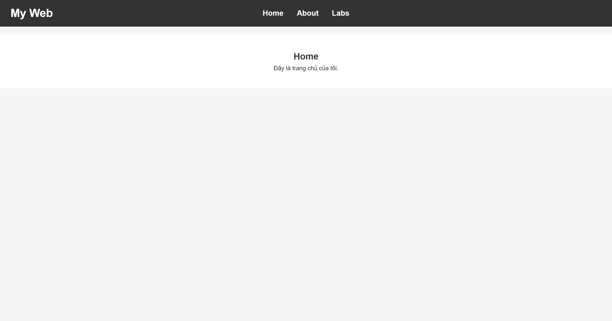
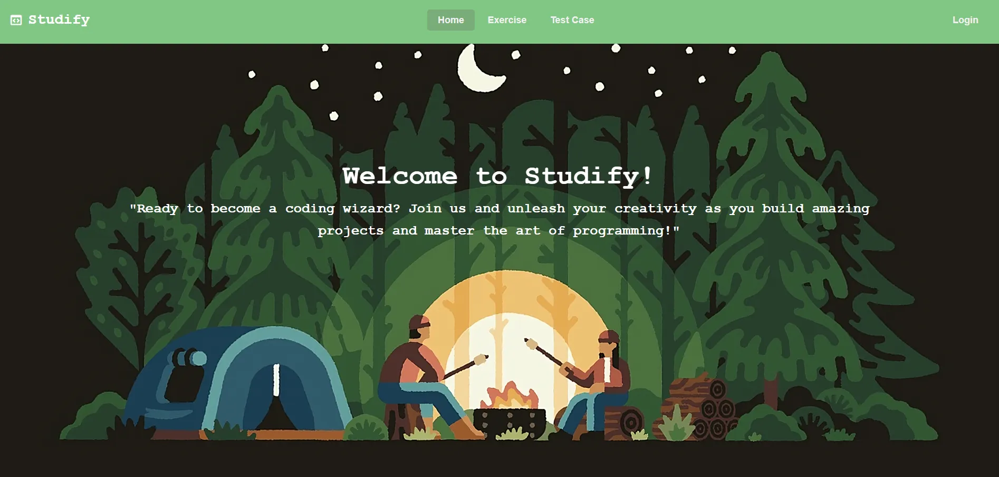
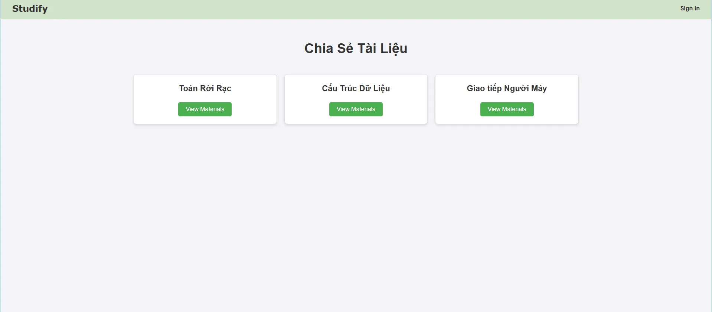
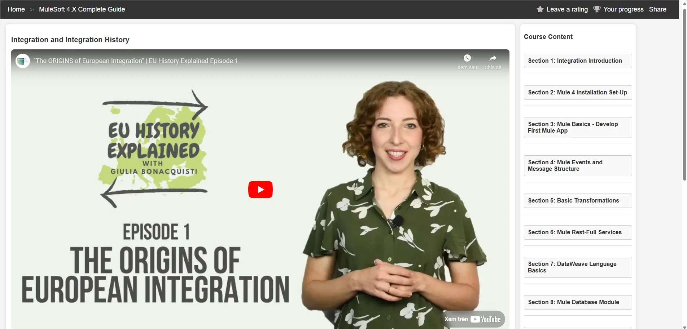

Introduction and Getting Familiar with HTML, CSS, and JavaScript
HTML, CSS, and JavaScript are the three core technologies in web development. They work together to create websites ranging from simple to complex. Getting familiar with and practicing these technologies is the first step for you to dive into the world of web development.
Come to Lab1 Implementing Login Page, Creating Courses, and Test Cases
In web application development, one of the fundamental and essential features is the login page. This page helps users authenticate their identity before accessing the services or courses available in the system. Additionally, the ability to create courses for users or instructors is a crucial feature in online learning platforms.
To ensure the accuracy and effectiveness of these features, writing and executing test cases is very important. Test cases help verify that the login page functions correctly, users can create courses without issues, and the system operates as expected.
Implementing the login page, creating courses, and writing test cases are key steps in building and ensuring the quality of a web application.
Come to Lab2 Implementing "Add Courses" Feature
The "Add Courses" feature is a key part of any online learning platform. It allows instructors or admins to create and manage courses. This feature typically includes functionalities such as adding course titles, descriptions, materials (like videos, quizzes, and assignments), and setting up prerequisites or levels.
Come to Lab3 Building Courses and Creating Videos for Courses
Building courses and creating videos are essential components of any online learning platform. As an instructor or content creator, you can organize and present your materials in various formats, with video being one of the most engaging ways to deliver content. Creating structured courses involves defining course objectives, designing modules, and ensuring that each lesson aligns with the learning goals.
Videos, on the other hand, serve as a powerful tool for explaining complex concepts, demonstrating processes, or providing practical examples. By creating high-quality video content, you can enhance the learner's experience and improve the effectiveness of the course.
Come to Lab4 Building Certifications, Achievements, and Learning Tools Pages
In an online learning platform, certifications, achievements, and learning tools are essential features that enhance the user experience and motivate learners. These elements not only track progress but also recognize the hard work and dedication of the learners. Implementing these features helps improve engagement and provides learners with tangible outcomes from their learning journey.
1. Certifications Page
A certification page displays the certificates awarded to learners upon successful completion of a course or a set of courses. These certifications serve as proof of the skills and knowledge acquired by the learner. You can include features such as:
2. Achievements Page
The achievements page highlights the accomplishments learners have earned throughout their learning experience. This could include things like:
3. Learning Tools Page
The learning tools page provides learners with the resources and tools they need to enhance their learning experience. These tools may include:
Building Home Page, Developers Page, and Rep7 Page
When designing a website or web application, creating the right home page, developers page, and Rep7 page is crucial for offering a seamless user experience. Each of these pages serves a unique purpose, guiding the user through the platform, offering resources to developers, and showcasing key features or tools like Rep7.
1. Home Page
The home page is the first point of contact for users, providing them with an overview of the website or platform. It must be well-organized and visually appealing to create a positive first impression. Key elements of the home page include:
2. Developers Page
The developers page is dedicated to providing resources and tools for developers who want to build, integrate, or extend the platform. This page typically includes:
3. Rep7 Page
The Rep7 page is often a specific section dedicated to a particular feature, tool, or service offered on the platform. Rep7 may refer to a tool, a system, or even a product that enhances user experience. Depending on its purpose, the Rep7 page could include: